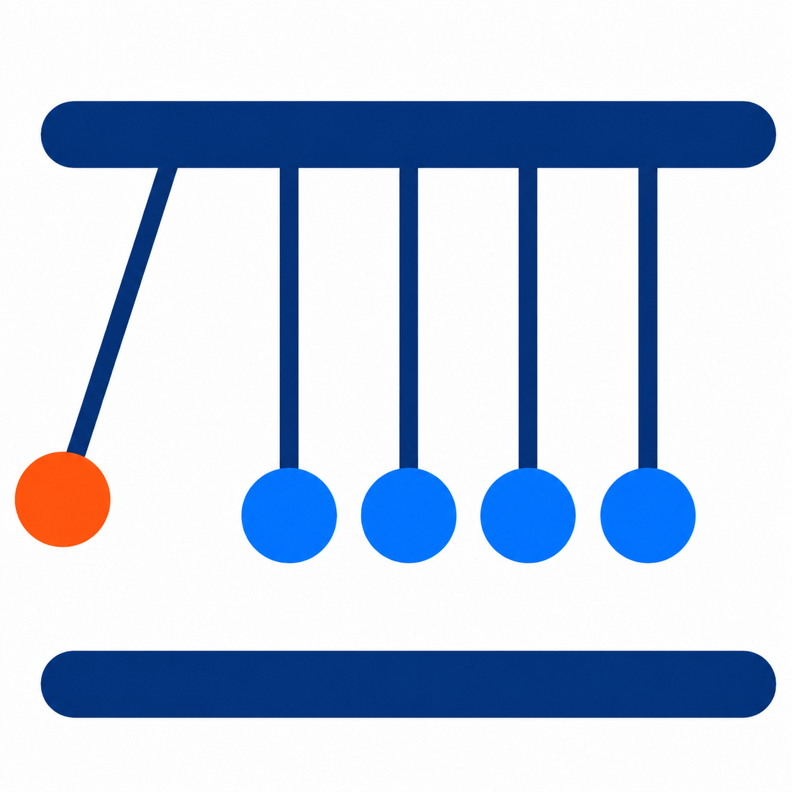

I’m Jumpei Kato, an HR Data Scientist.
I build people analytics models and tools that turn workforce data into practical decisions, from headcount and labor cost forecasting to attrition analysis and interpretable driver models.
Analytics Projects
Headcount Simulation
Markov-chain-based workforce transition model for scalable headcount forecasting.
Labor Cost Simulation
EBM-based labor cost simulation using simulated headcount outputs.

Driver Analysis
Configurable driver analysis for categorical HR data and client-specific questions.
Security Review AI
AI agent for automated security review responses with a 60% correct answer ratio.